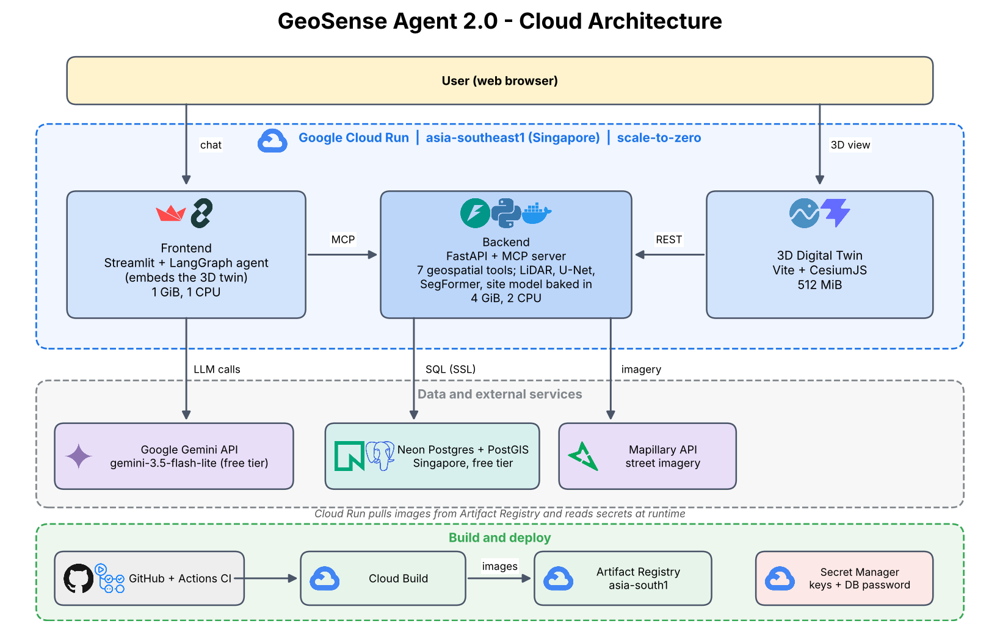
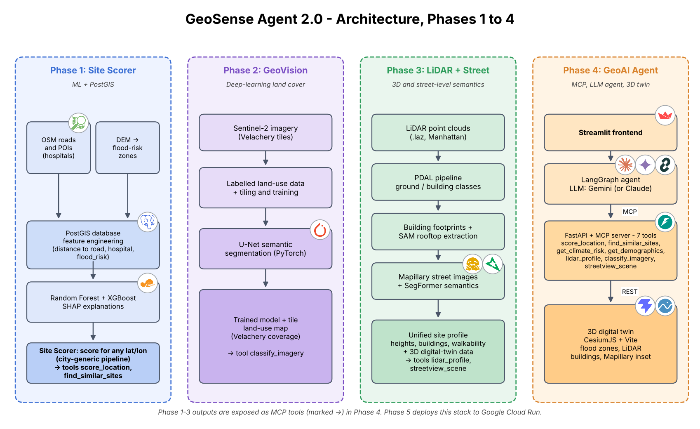

Ask a question about a place. Watch the map answer.
GeoSense Agent is an AI agent that calls machine-learning, deep-learning, LiDAR and street-view tools to answer plain-English questions about a location, while a 3D digital twin flies to the result. Built by Packiarajan Siva (M.Tech Geoinformatics, University of Madras).
Try it
3D digital twin
CesiumJS globe with flood zones, LiDAR buildings and Mapillary street view.
Open the twinQuestions to ask:
- Is the area at 13.0827, 80.2707 in Chennai prone to flooding?
- What is the walkability around 40.7033, -74.017?
- What is the land cover at Velachery, Chennai?
All live links
| What | Link | Notes |
|---|---|---|
| Agent demo (Streamlit) | geosense-frontend | Gemini + LangGraph agent |
| 3D digital twin | geosense-twin | Also embedded in the demo |
| Backend API docs | /docs | FastAPI + MCP, 7 tools |
| Backend health check | /health | Returns status JSON |
| Source code | GitHub repository | Phases 1 to 5, CI workflow |
| CI/CD runs | GitHub Actions | Compile check + image build |
Architecture
Cloud deployment (Phase 5): three Cloud Run services in Singapore, a Neon PostGIS database, Gemini for the agent, Mapillary for street imagery.

How it was built (Phases 1 to 4)

Tech
Python, FastAPI, Model Context Protocol, LangGraph, Gemini, Streamlit, PostGIS (Neon), scikit-learn / XGBoost / SHAP, PyTorch U-Net, LiDAR (PDAL, laspy), SegFormer, Mapillary, CesiumJS, Vite, Docker, Google Cloud Run, Cloud Build, Secret Manager, GitHub Actions.